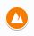
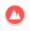
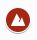
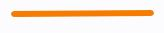

Welcome!
Please read me! This is the map's description, and guide on how to use it, plus some extra info (a very similar description is available on the map itself). Welcome to the world. This is a map made by me: Max. You can find my contact in the about page of this website. Or, contact me by email. This map belongs to our exploration group, which you can learn more about through the exploration portal. We also have an exploration group chat, again contact either Dev, Marlon, or myself if you wish to be added. We'd appreciate if you do not extensively share this map and only keep it between close friends for the sake of privacy and to keep these places special.
To use the map, you can navigate through the window on this site, or even better, click on the full screen icon, or click the button below the frame. A layers and places menu should be visible on your left, check and uncheck boxes to see layers. To see an item, click on it on the map or in the menu. A place has a title, a description, and images in some cases. The title provides an ID (see below for IDs and Icons) as well as the name of the place. Places have coordinates using multiple systems (mainly decimal coordinates).
Some additional information and disclaimers:
This map lacks some accuracy, although I promise, the stories I've written, and the locations are as accurate as they can be. Some of these places have not been verified, only visited by other explorers and mapmakers - this is specified in the description. I apologize for any inaccuracies, I promise I'm visiting and informing myself as much as possible. By the off chance that even the slightest inaccuracy does occur, I apologize. Be sure to contact me if you have any corrections to make or any suggestions :)
This map gets updated a lot. I really mean a lot. You can see the view count right under the description. Currently it's at almost 600 views. Keep in mind that around 90% if not more of those views are from me. There are times when I check this map virtually every day. I regularly go on exploring trips and always have some kind of information to bring back. Additionally, this map was created over a year ago (was created on July 29th 2019) back when I didn't necessarily have as much places to put; because of that I added random and not necessarily "relevant" places. Some places just aren't that interesting, some completely got wiped off the map. These places and IDs get changed around because places get deleted more re-classified. If you're planning to use this on a trip, or for informing yourself if you consider this that insightful, please check the map the day you're beginning the endeavor as changes happen more often than you think.
Here are some websites you might benefit from: Meteo Search for anything weather related (hour by hour graphs, wind and temperature maps, etc...), the Drinking Water Map in case you're in need of water, the Swiss Topographic Map which is Switzerland's national map, SchweizMobil/SuisseMobile/SwitzerlandMobility which is the national map but with layers dedicated to hikes biking and so much more, the French National Geographic Institute (IGN) Map which is France's national map, NatuRando II which is a collection of marked paths in the Vaud Canton. More resources which help me in my research and which might be relevant to you are in other sections of the exploring portal. Lastly, here's a God Tier website which is excellent for helping you plan trips, full of pictures and awesome maps: click here. All the websites and sources I use are in the resources section. With that said, happy exploring!
Explanation of layers, icons and IDs:
This section explains every layer, as well as provides tables of icons you might see which belong to this table.
Layer 1: Miscellaneous Places contains most of the places you'll see on the map. These are places that aren't unique enough or are too unique to have their own category. The places are usually not that big either, usually a local curiosity.
| Icon | ID Prefix | Description |
|---|---|---|
| A | Miscellaneous Place, see above. | |
| N | An important pathway (not a travel axis). |
Layer 2: Historical Sites and Monuments contains anything of historical significance (although places that are very old but still used like churches will be in layer 4). Anything like a statue, a place of worship, an old construction, a castle, ruins, etc...
| Icon | ID Prefix | Description |
|---|---|---|
| H | Anything relevant to Prehistoric, Protohistoric, or Neolithic times. | |
| H | Anything relevant to the celtic period of the region. | |
| H | Anything relevant to the Romans or Roman Empire. | |
| H | Anything relevant to the Middle Ages. | |
| H | Anything relevant to the Renaissance and after. | |
| H | A (modern) statue. | |
| F | A castle, fortification, etc... |
Layer 3: Natural Features contains all geographical formations, features, and so on. *Very important note: all caves and mountains on this map are climbs which do not require as much experience and are therefore achievable with greater ease. It means that people my age (16-17 year olds) can do it with relative ease. This is not the Mont Blanc, nor the Dufourspitze, nor the Finsteraarhorn. It is not the Baume n°2 de la Clairière de Trébille either. As awesome as all of these ascents and descents are, they're unfortunately not possible as of now. The point is: if they're about to be reached and explored by me, or if they were already reached by me, they're on this map. I've made a "bucket list" of stuff to climb, which you can see here, hopefully it gives you an idea. And once again, I'm stressing this, be exceptionally careful, take all necessary precautions, do not do this with even an ounce of uncertainty, I urge you. Providing these places does not mean I give you the green light to do this. I am obviously not responsible for any accidents or injuries or incidents that occur in these places.
| Icon | ID Prefix | Description |
|---|---|---|
| C | A cave (ones which can be safely explored with not much material, do not kill yourselves over it, remember, always take precautions, I'm not responsible for any accidents, do not get crushed to death tens of meters below ground). | |
| M | A climbable* mountain peak between 0m - 1500m above sea level. | |
|  | M | A climbable* mountain peak between than 1500m - 1999m above sea level. |
|  | M | A climable* mountain peak between than 2000m - 2999m above sea level. |
| M | A climbable* mountain peak between than 3000m - 3999m above sea level. | |
|  | M | A climbable* mountain peak greater than 4000m above sea level. |
| W | A river, stream, etc... | |
| W1, W2, W3 | Important points in a river (W1 = source of the river, W2 = confluence of two rivers, W3 = mouth of the river). |
*see description above
Layer 4: Modern Human Stuff contains all locations which are used today.
| Icon | ID Prefix | Description |
|---|---|---|
| B | An important building or installation: town halls, administrative buildings, public facilities, ... | |
| R | All places of worship. The icon on the left is the default icon, however, the icon changes depending on religion. | |
| P | A park. | |
| P | A playground. | |
| E | A public school | |
| E | A private school | |
| E | A university (or object associated with a university). | |
| S | A sport center, stadium, fitness room, etc... | |
| S | A place to practice a specific recreational sport. The default icon is the square, but the icon changes depending on the sport. |
Layer 5: Transport contains anything you need to travel around without a personal vehicle (haven't added parkings so far). Also, these only include more "important" places, which actually come in useful when travelling, no obscure stations or anything like that.
| Icon | ID Prefix | Description |
|---|---|---|
| T1 | Important train station. | |
| T11 | Railway. | |
| T2 | Important bus stop. | |
| T3 | Airstrip. | |
 |
T3 | Airport. |
| T4 | Port. |
Layer 6: Fountains & Checkpoints contains your drinkable and non drinkable (decorative) fountains. I'm obviously not gonna add every fountain in the world, but I've added the special and pretty ones I've seen before. Checkpoints include anything from small places where you can rest (and which lie on important travel axes), all the way to camping grounds.
| Icon | ID Prefix | Description |
|---|---|---|
| D1 | Drinkable fountain. | |
| D2 | Decorative fountain. | |
 |
O1 | (Any) checkpoint. |
| O2 | A campsite. |
Layer 7: Temporary Places contains... well... temporary places. Routes which are temporarily put there so I can print off a map for example, or the location of an event.
| Icon | ID Prefix | Description |
|---|---|---|
|  | X | Temporary line/pathway. |
| X | Temporary point. |